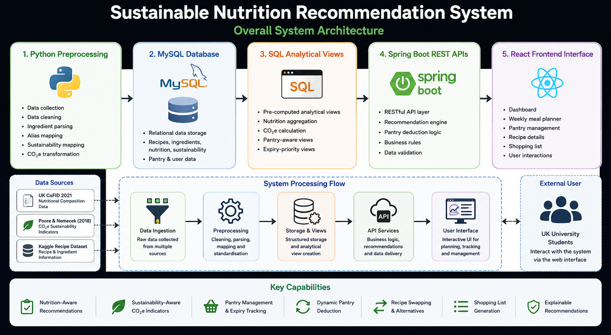
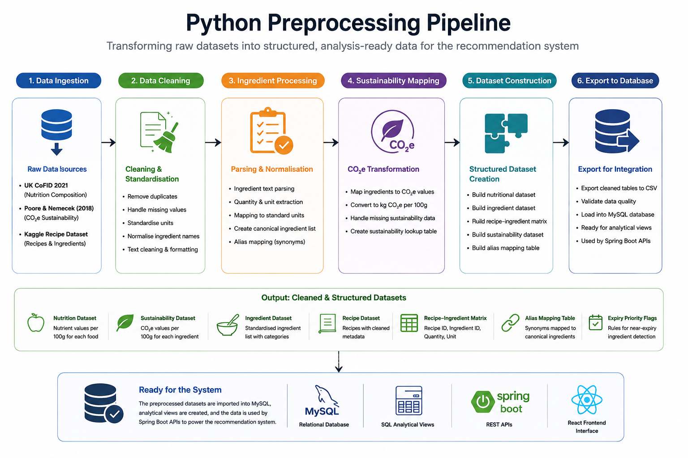
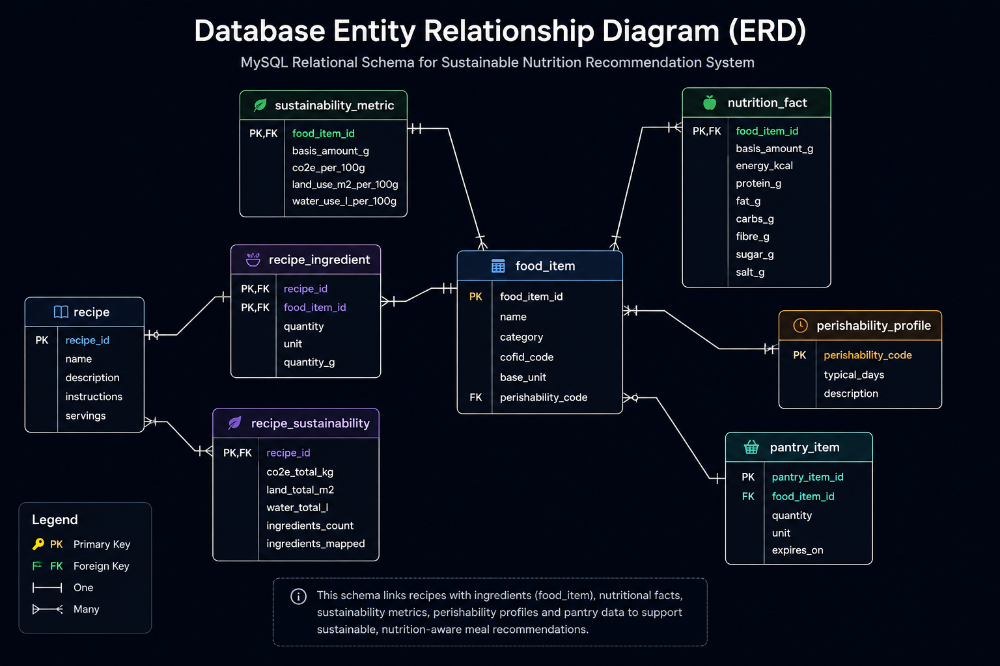
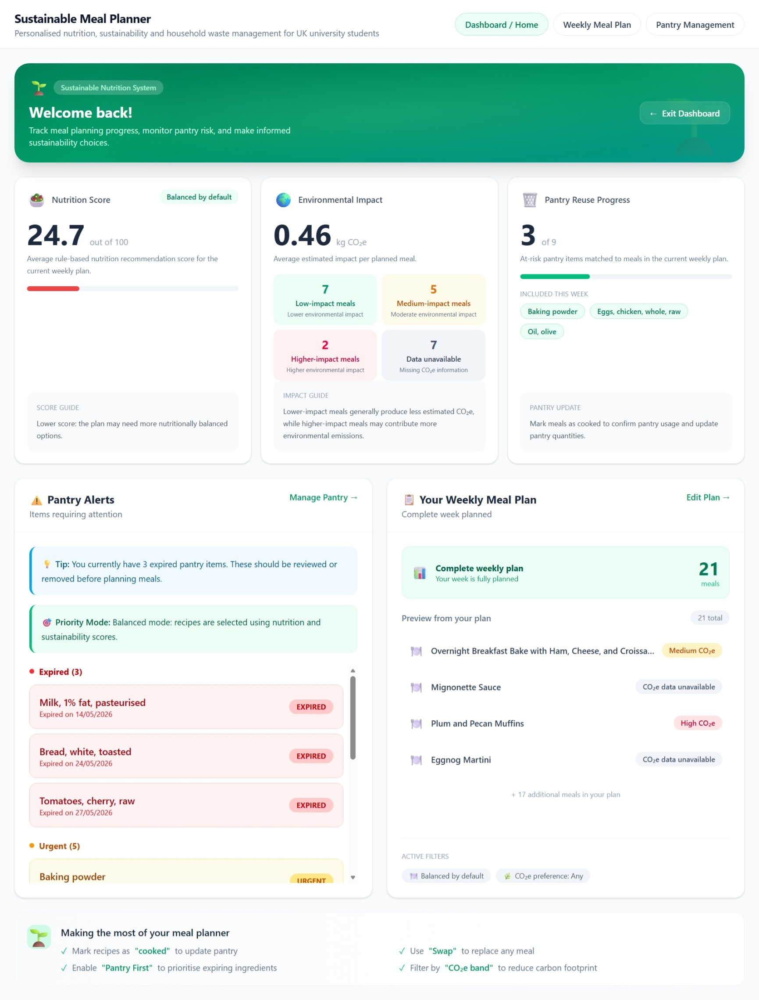
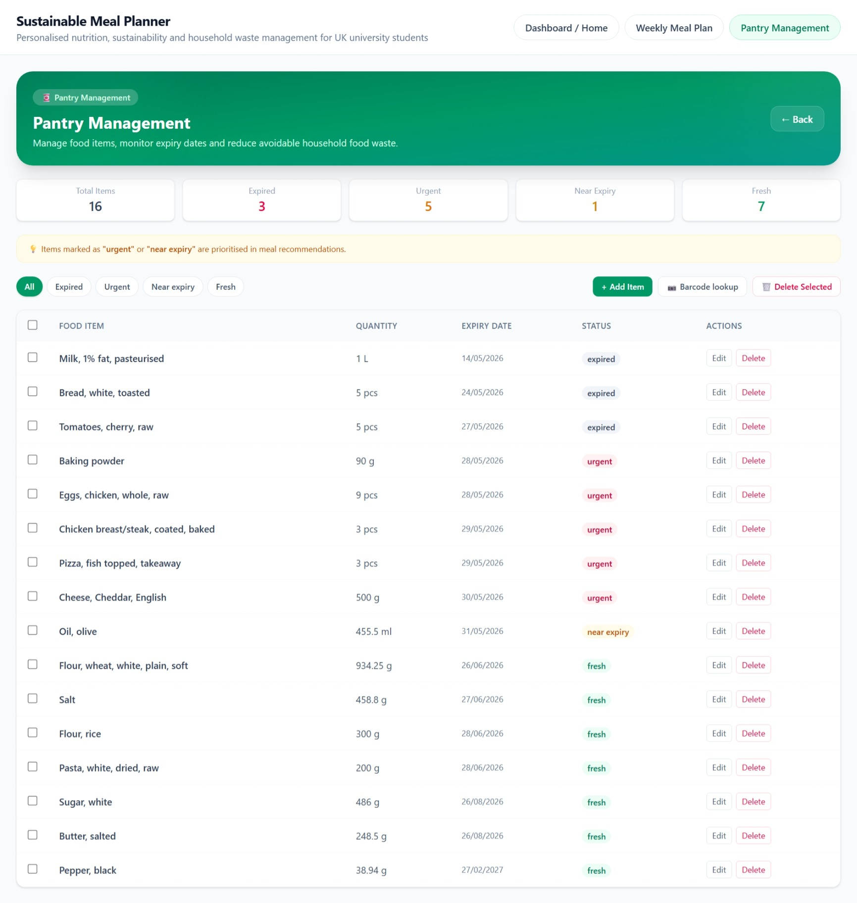
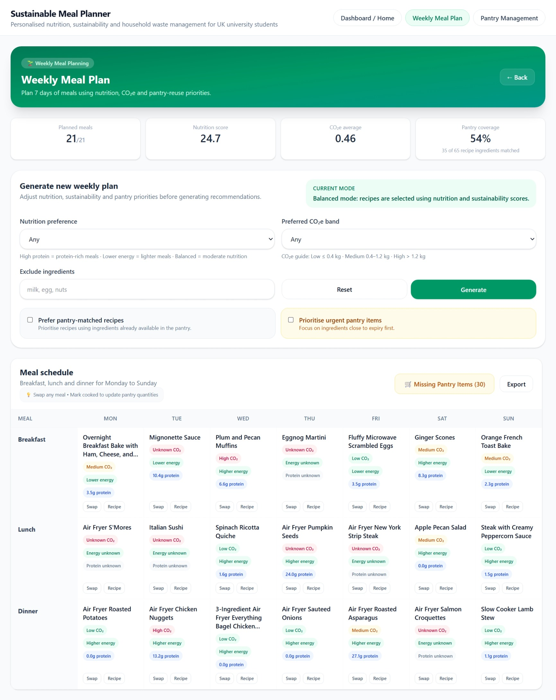

Sustainable Nutrition Recommendation System
Smart Meal Planning for a Better Future
Dissertation: Design and Implementation of a Web‑Based AI Framework for Sustainable Nutrition Management
A rule‑based web application that helps UK university students generate weekly meal plans that balance nutritional quality, environmental sustainability, and household ingredient reuse.

System Demo
10‑minute walkthrough of the full artefact workflow.
Project Overview
This artefact integrates nutritional data, sustainability indicators, and pantry‑aware logic into a single decision‑support system designed for UK university students.
Nutritionally Balanced Plans
Recipes evaluated using CoFID 2021 and NHS Eatwell guidance.
Sustainability Indicators
Ingredient‑level CO₂e values mapped using Poore & Nemecek (2018).
Pantry‑Aware Logic
Prioritises ingredient reuse and reduces avoidable household food waste.
Key Features
Pantry‑Aware Recommendations
Scores recipes based on ingredient availability and match percentage.
Expiry‑Date Prioritisation
Highlights ingredients approaching expiry to minimise waste.
Sustainability‑Aware Planning
CO₂e‑based labels help compare environmental impact across meals.
Explainable Rule‑Based Logic
Transparent scoring system aligned with responsible AI principles.
System Architecture
From raw datasets to explainable recommendations.




Interface Screenshots





How to Run the System
- Install MySQL, Node.js, and Java 17.
- Import the provided empty schema into MySQL.
- Start the Spring Boot backend (`mvn spring-boot:run`).
- Start the React frontend (`npm install` → `npm start`).
- Access the system at http://localhost:3000.
Private Repository Access
The full source code (React, Spring Boot, MySQL, Python preprocessing) is stored in a private repository.
Request Access